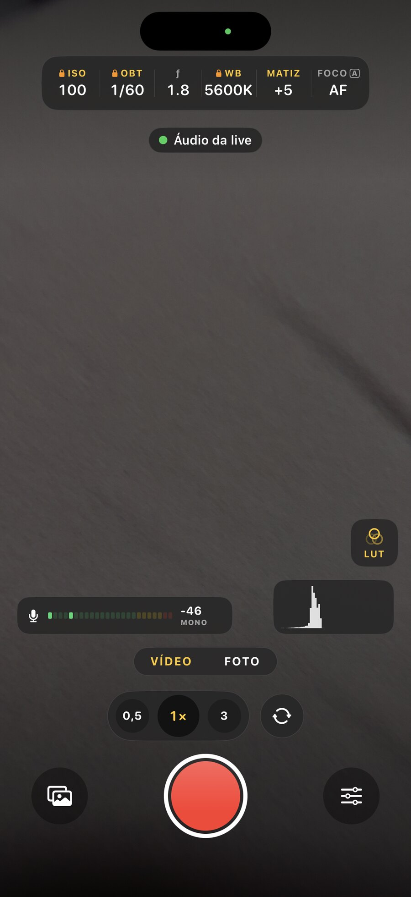
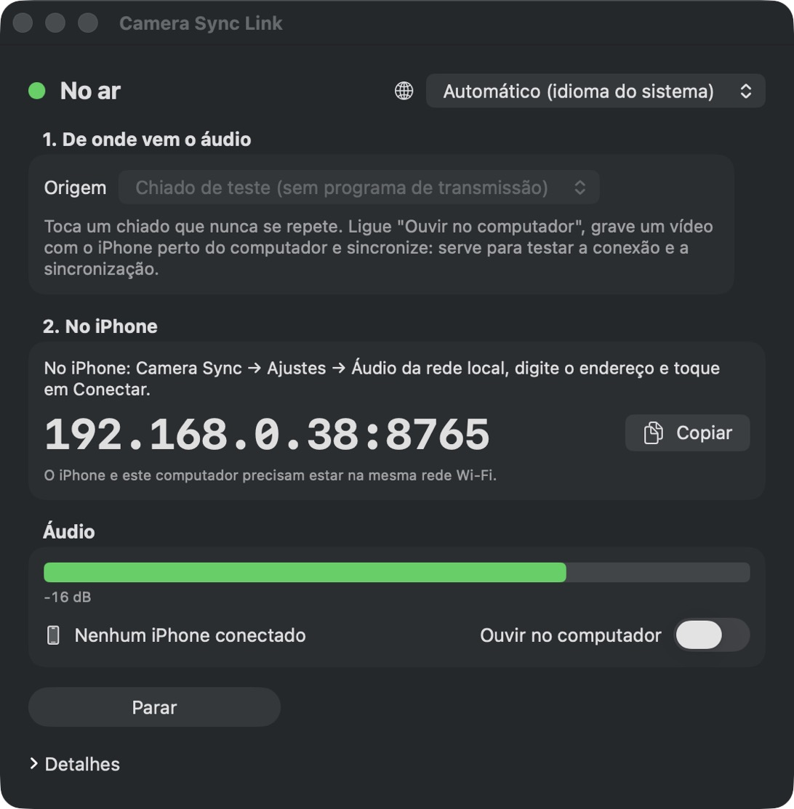

O áudio da live sempre à vista.
Uma cápsula na câmera fica verde enquanto o som da transmissão está chegando. Ao lado ficam o medidor do microfone do iPhone e o histograma da exposição.
Camera Sync é uma câmera manual para iPhone que recebe o som da mesa pelo Wi-Fi e sincroniza com o seu vídeo. Você grava, para e já pode publicar.
Para iPhone 11 ou mais novo, com iOS 17. Na primeira assinatura, 7 dias grátis.

Quem grava evento conhece o problema. O microfone do celular pega eco, plateia e caixa de som. O áudio bom está na mesa, indo para a live.
Com eco e barulho. Esse som não vai para o vídeo final. Ele serve de referência.
O Camera Sync Link, no computador da transmissão, envia o áudio limpo da live. O iPhone guarda o horário de cada trecho.
Ele compara os dois sons e alinha com precisão de milissegundos. Você não bate palma nem arrasta nada na linha do tempo.
O som do microfone sai e o da mesa fica no lugar. Corte o começo e o fim, salve na galeria ou envie para o Instagram.
Trave exposição, branco e foco para a imagem não mudar no meio da gravação. O painel abaixo é o mesmo que aparece no topo da câmera.
Uma cápsula na câmera fica verde enquanto o som da transmissão está chegando. Ao lado ficam o medidor do microfone do iPhone e o histograma da exposição.
Escolha resolução, quadros por segundo e taxa de gravação. O app mostra qual ajuste é recomendado para lives.
Importe LUTs no formato .cube. Veja a imagem com a LUT enquanto grava e decida se ela entra no vídeo ou se o arquivo fica original.
Nada passa pela internet. O som sai do computador da transmissão e vai direto para o iPhone, mesmo onde o sinal de celular é ruim.
Quem opera a transmissão deixa o computador enviando o áudio. Quem grava só conecta o iPhone.
É gratuito, para Mac e Windows. Escolha de onde vem o áudio (OBS, vMix ou mesa de som) e ele mostra um endereço na tela.
No Camera Sync, abra Ajustes e depois Áudio da rede local. Digite o endereço e toque em Conectar. A cápsula verde na câmera confirma que o som está chegando.
Deixe o microfone do iPhone ligado, mesmo baixo. Quando você para de gravar, o app alinha o vídeo com o áudio da live.

Depois, assinatura mensal pela App Store. O preço aparece na App Store antes de você assinar. Para cancelar, abra Ajustes do iPhone, toque no seu nome e em Assinaturas. O acesso continua até o fim do período pago.
Programa gratuito que envia o áudio da sua live (OBS, vMix ou mesa de som) para o Camera Sync pelo Wi-Fi. Instale no computador da transmissão.
O Camera Sync Link usa o FFmpeg, licenciado sob a LGPL.
Para entrar na conta e assinar, sim. Gravar e sincronizar funcionam dentro da rede Wi-Fi do evento.
No iPhone 11 ou mais novo, com iOS 17 ou superior. O Apple Log depende do modelo e está disponível do iPhone 15 Pro em diante.
Sim, mesmo que baixo. É o som do ambiente que o app usa para achar o ponto exato de encaixe.
Confira se o Camera Sync Link estava enviando áudio durante a gravação e se o microfone do iPhone captou o som do local. Depois toque em Sincronizar no vídeo. Se continuar, fale com o suporte.
Não. Vídeos, fotos e áudio ficam no seu iPhone. Guardamos só o necessário para a sua conta e a assinatura.